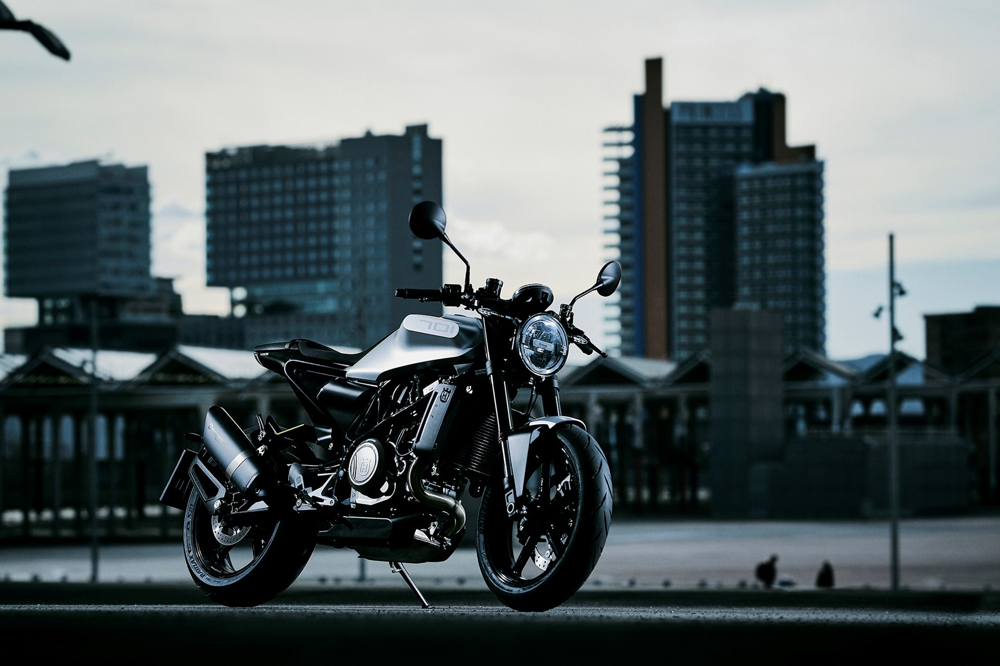

Husky claim the Vitpilen 701 isn’t a sporty bike, but it still does a pretty good impression of being one. It’s light and flickable, allowing you to change lines with easen and it darts from one side to the other like a toy and turns so quickly it took me by surprise on more than one occasion. But the overall beauty of the Vitpilen underneath that radical bodywork is how easy it is to ride and how much fun it is – and all without the need to be doing double the speed limit! The 701 has much wider abilities than many expected and will appeal to everyone from fashionable commuters to new bikers – but it's a massive shame about the high price.

That riding position feels natural and not too upright, but the Husky’s seat is quite hard, meaning that the chance to stretch my legs when the fuel light came on at between 75 and 85 miles was very welcome. The plush suspension is soft enough to take on the harsh city environment, bouncing over speed humps and not jolting over huge potholes.
Husky's trellis chassis houses the most powerful single-cylinder motor on the market. Husqvarna are claiming 75bhp from the KTM unit and it’s identical to the engine found in KTM’s 690 Duke and Husqvarna’s own Supermoto 701. But thanks to revised fuelling and a different exhaust and airbox it produces one vital more bhp than the Duke... Husky have also improved the gearbox to give a more positive change between second and third and added ‘Easy-shift’, which is their name for an up-and-down quickshifter.
Around town, the single is responsive and surprisingly smooth above 3000rpm – so much so you would be forgiven for mistakenly thinking you’re riding a twin. Below that, of course, the delivery’s a little lumpy, as you’d expect from a big single. Get it above 3000rpm and it’s faultless with impeccable fuelling.
The single-cylinder engine has been powering the 690 Duke since 2012 (although it has been updated) and is a reliable unit.
At nearly £9000, it’s pricier than Yamaha’s brilliant XSR900, Triumph’s outstanding Street Triple S and even £900 more than Ducati’s base Monster 797. These multi-cylinder bikes are more versatile and offer more ‘real-world’ performance than Husky's single cylinder. Insurance group: 11 of 17 – compare motorcycle insurance quotes now..
The WP suspension is near identical to that on the 690 Duke. The front 43mm USD forks are fully-adjustable while the shock, which operates through a linkage, is adjustable for rebound and preload only. The brakes are the same as those on the 690 Duke while ABS is standard as is basic traction control, although it isn’t angle-sensitive. Thankfully, you can de-activate the traction control while on the move and even turn off the ABS at a standstill. Husky's ‘Easy-shift’ is a joy to use and once moving it negates the need for a clutch. Unlike some quick-shifters, it’ll even downshift on part throttle and doesn’t require the throttle to be fully closed. There’s even a fun little ‘pop’ from the fruity exhaust between up-shifts, which is lovely....